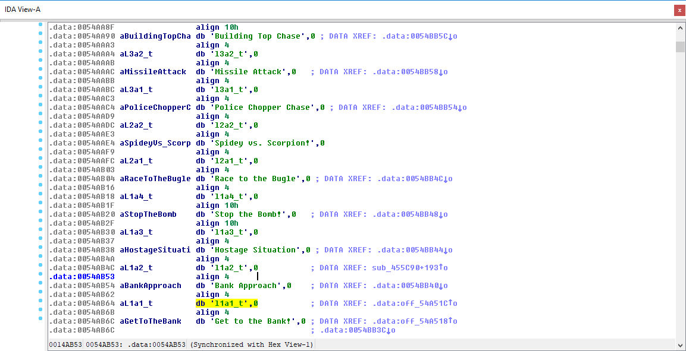
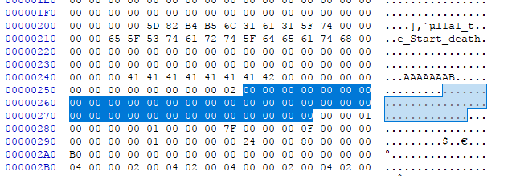

Reversing: Spiderman 2000 - Save file contents
Quick recap
The last post ended with me being able to generate the correct checksum for the save slots. This means regardless of its contents being valid according to the game I'm now able to load my custom save files.
Current level
As I said this game becomes unbeatable at certain levels so this was the first thing I looked for. Looking at the available strings in the save slot there was one that caught my attention, l1a1_t, it really looked like "Level 1 Area 1". So I decided to check in IDA if there were any references:

Awesome! Not only it is referenced but the level names are intercalated with the respective level codes(lXaX_t).
Time to test
I modified the string to l1a2_t and corrected the checksum. The save loaded correctly and it was displaying the correct string "Bank Approach" in the main menu, unfortunately it was still the first level... Since the levels don't contain the same number of areas the developers took the easy way out and have 2 references to the current level in the save file, one is for the string the other is for the actual level.
Finding the real level
This one was actually easy. Instead of trying to find it through the disassembly I just played the first few areas and compared the saves. While I was progressing through each area, more and more bytes were turning from 0 to 1(one per level), starting at 0x56. Basically for each area that's beaten the byte that corresponds to its index is set to 1. When you finish the game the byte at position 0x55 is also set to 1.

Since we're at the start of the game all the bytes are set to 0
Costumes
Current costume
To find how they were stored I'd simply input the code save and check the differences in the file. At the offset 0x280(0x7C of the slot) that it saves the current ID of the costume the player is wearing:
- SPIDERMAN
- SPIDERMAN 2099
- SYMBIOTE SPIDERMAN
- CAPTAIN UNIVERSE
- AMAZING BAG MAN
- SCARLET SPIDEY
- BEN REILLEY
- QUICK CHANGE
- PETER PARKER
Unlocked costumes
This one trickier to figure out. At the offset 0x284(0x80 of the slot) there's a DWORD that seems to change whenever you unlock a costume. If you unlock them in order it will simply increase from 1 to 1023(0x3FF). It's a bitmask and the first 9 bits represent the costumes. If it's 0 then it's locked, then it's unlocked. That's why it goes from 1(000000001) to 1023(111111111).
Storyboards, Comics..
This part doesn't really matter to me and since I've found out about cheat codes I stopped working on this.
Make sure to check the source code of the save editor: HERE
And here's a video of it in action: